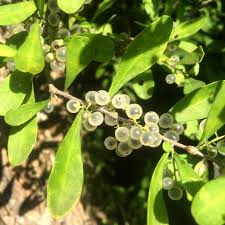

Acanthaceae
Acanthus Family / Bear's Breeches Family
Acanthaceae is a large and diverse family of dicotyledonous flowering plants, primarily found in tropical and subtropical regions of the world. Known for often showy, bilabiate flowers, prominent bracts, and characteristic explosively dehiscent capsules, the family includes many popular ornamental plants like Shrimp Plant, Black-eyed Susan Vine, and Bear's Breeches, as well as ecologically important mangroves (Avicennia).
Overview
The Acanthaceae family comprises nearly 4,000 species in about 220-250 genera. While cosmopolitan, its greatest diversity lies in the tropics and subtropics, inhabiting a wide range of environments from rainforests and woodlands to swamps and even mangrove ecosystems. Many species are adapted to specific pollinators, often featuring specialized flower shapes and nectar guides.
Members are typically herbs or shrubs, but can also include vines and small trees. A distinctive feature found in many (but not all) members is the presence of cystoliths – microscopic mineral concretions within leaf and stem epidermal cells, often visible as streaks or bumps on dried specimens. The family is well-known for its horticultural value, with numerous genera cultivated for their striking flowers and foliage.
Economically, Acanthaceae is most significant for its contribution to ornamental horticulture. Some species have traditional medicinal uses, and the genus Avicennia (Black Mangroves) plays a crucial role in coastal ecosystems, providing habitat and shoreline protection, although its placement within Acanthaceae or its own family Avicenniaceae is sometimes debated based on phylogenetic data.
Quick Facts
- Scientific Name: Acanthaceae
- Common Name: Acanthus family, Bear's Breeches family
- Number of Genera: Approximately 220-250
- Number of Species: Approximately 4,000
- Distribution: Primarily tropical and subtropical regions worldwide
- Evolutionary Group: Eudicots - Asterids - Lamiales
Key Characteristics
Growth Form and Habit
Most Acanthaceae are perennial herbs or shrubs. However, the family also includes annuals, lianas (vines), and rarely small trees (e.g., Avicennia). Stems are often square in cross-section, especially in younger growth, similar to the related Lamiaceae family. Some species exhibit climbing habits using twining stems or adventitious roots.
Leaves
Leaves are typically simple, opposite, and decussate (arranged in pairs at right angles to the pairs above and below). Margins are usually entire but can be toothed or lobed. Stipules are absent. A notable feature in many species is the presence of cystoliths, which are calcium carbonate deposits in epidermal cells, often appearing as minute lines or dots, especially on dried leaves.
Inflorescence
Inflorescences are highly variable, ranging from solitary flowers to complex arrangements like spikes, racemes, panicles, or dense heads (cymes). A common and often diagnostic feature is the presence of conspicuous bracts and bracteoles subtending the flowers. These bracts can be large, colorful, and sometimes spiny, contributing significantly to the overall floral display (e.g., Acanthus, Justicia).
Flowers
Flowers are typically bisexual, zygomorphic (bilaterally symmetrical), and often tubular or funnel-shaped. Key floral features include:
- Calyx: Usually composed of 4 or 5 sepals, which may be fused at the base or nearly distinct.
- Corolla: Typically composed of 5 fused petals, often forming a two-lipped (bilabiate) structure, although some are nearly regular or have reduced lips. Colors are diverse, often bright and attracting specific pollinators.
- Androecium: Stamens usually number 2 or 4 (didynamous: two long, two short), attached to the corolla tube (epipetalous). Anthers often have specific shapes or appendages.
- Gynoecium: A single superior ovary composed of two fused carpels, typically with two locules. A single style arises from the top, usually ending in a two-lobed stigma.
Fruits and Seeds
The characteristic fruit is a loculicidal capsule that often dehisces explosively. This explosion is facilitated by hook-like structures called retinacula (jaculators), modified funicles that forcibly eject the seeds upon drying. Seeds are typically flattened, discoid, and lack endosperm. Seed number per capsule varies but is often relatively low (e.g., 2-4). Avicennia is an exception, having a fleshy, viviparous fruit (propagule) that germinates while still attached to the parent plant.
Chemical Characteristics
Acanthaceae species produce various secondary metabolites, including iridoid glycosides, alkaloids, flavonoids, and terpenoids. Cystoliths (calcium carbonate) are a prominent physical characteristic in many members. Some compounds contribute to the medicinal properties attributed to certain species in traditional practices.
Field Identification
Identifying Acanthaceae in the field often relies on a combination of vegetative and floral characters. Here are key features to look for:
Primary Identification Features
- Opposite, simple leaves: Check for leaves arranged in pairs directly across from each other on the stem.
- Zygomorphic, often bilabiate flowers: Look for flowers that are bilaterally symmetrical, frequently with distinct upper and lower lips.
- Prominent bracts: Observe the base of the flower or inflorescence for often noticeable, sometimes colorful or spiny, leaf-like structures (bracts).
- Explosive capsules with retinacula: If fruits are present, look for capsules that split open forcefully, often containing hard, hook-like retinacula that fling the seeds.
Secondary Identification Features
- Square stems (often): Feel the stems, especially younger ones, for four distinct edges.
- Cystoliths: Look closely at leaf surfaces (sometimes requires magnification or drying) for small lines or dots.
- Stamen number (2 or 4): Carefully examine the inside of the flower tube for the number of stamens.
- Superior ovary: Note the position of the ovary relative to the attachment point of sepals and petals (it should be above).
Seasonal Identification Tips
- Flowering Season (Tropics/Subtropics): Many species flower year-round or during specific wet/dry seasons. Flowers and associated bracts are key.
- Fruiting Season: Look for the characteristic capsules, especially after flowering peaks. Observing the explosive dehiscence can be definitive.
- Vegetative State: Opposite leaves and the presence of cystoliths (if visible) can help narrow down possibilities even without flowers or fruits.
Common Confusion Points
- Lamiaceae (Mint family): Also has opposite leaves, often square stems, and bilabiate flowers. Lamiaceae typically has a gynobasic style (arising from the base of ovary lobes) and fruit consisting of 4 nutlets, unlike the superior ovary style and capsule fruit of Acanthaceae. Lamiaceae are often aromatic.
- Scrophulariaceae sensu lato (Figwort family complex): Some groups now split from Scrophulariaceae (like Plantaginaceae, Orobanchaceae) share features like opposite leaves and zygomorphic flowers. Capsule structure and presence/absence of retinacula are important differentiators.
- Verbenaceae (Verbena family): Also in Lamiales with often opposite leaves. Flowers can be slightly zygomorphic, but fruits are typically drupes or schizocarps splitting into nutlets, not explosive capsules.
Field Guide Quick Reference
Look For:
- Opposite, simple leaves
- Zygomorphic flowers (often 2-lipped)
- Prominent bracts (often colorful/spiny)
- Capsule fruit (often explosive)
- Retinacula (hooks) inside capsule
- Cystoliths (lines/dots on leaves)
Key Variations:
- Habit: Herbs, shrubs, vines, mangroves
- Stamens: 2 or 4
- Bracts: Small and green to large and showy
- Inflorescence: Solitary to dense spikes/heads
- Corolla shape: Tubular, funnelform, bilabiate
Notable Examples
Acanthaceae is rich in horticulturally significant and ecologically interesting species. Here are some well-known examples:

Acanthus mollis
Bear's Breeches
A robust perennial known for its large, deeply lobed, glossy leaves that famously inspired Corinthian column capitals in classical architecture. Produces tall spikes of white or purplish flowers subtended by spiny purple bracts. Popular in gardens in temperate climates.

Thunbergia alata
Black-eyed Susan Vine
A fast-growing, twining vine popular as an annual or tender perennial. Features characteristic bright orange, yellow, or white salverform flowers with a distinct dark brown or black center (throat). Widely cultivated as an ornamental climber for trellises and hanging baskets.

Justicia brandegeeana
Shrimp Plant
A shrub recognized by its drooping chain-like inflorescences composed of overlapping, heart-shaped bracts, typically salmon-pink to brick-red, resembling cooked shrimp. The actual flowers are small, white, and protrude from the bracts. A common landscape plant in warm climates.

Ruellia simplex
Mexican Petunia / Britton's Wild Petunia
A vigorous perennial herb with lance-shaped leaves and showy, trumpet-shaped, purple or blue flowers that last only a day. It can be invasive in some regions due to its rapid spread via seeds and rhizomes. Several cultivars exist with different flower colors and heights.

Avicennia germinans
Black Mangrove
A salt-tolerant tree forming dense stands in coastal mangrove ecosystems. Characterized by pneumatophores (aerial roots) projecting vertically from the mud, opposite leathery leaves often encrusted with salt, and small yellow flowers. Produces large, viviparous propagules. Ecologically vital but sometimes placed in its own family (Avicenniaceae).

Hypoestes phyllostachya
Polka Dot Plant
A popular houseplant and bedding plant grown primarily for its attractive foliage, which is green heavily spotted with pink, red, or white. The small, inconspicuous lilac flowers are often removed to encourage leaf growth. Native to Madagascar.
Phylogeny and Classification
Acanthaceae belongs to the order Lamiales, a large and diverse group within the asterid clade of eudicots. Molecular phylogenetic studies have confirmed its placement within Lamiales, showing close relationships with families like Lamiaceae, Verbenaceae, Bignoniaceae, and Plantaginaceae. The exact relationships among these families are still areas of active research.
The family itself is generally divided into four subfamilies: Acanthoideae, Nelsonioideae, Thunbergioideae, and Avicennioideae. Avicennioideae, containing only the mangrove genus Avicennia, is sometimes treated as a separate family (Avicenniaceae) due to its unique adaptations and some molecular data, though recent large-scale analyses often include it within Acanthaceae. The largest subfamily, Acanthoideae, contains the vast majority of the genera and species and exhibits the characteristic explosive capsules with retinacula.
Position in Plant Phylogeny
- Kingdom: Plantae
- Clade: Angiosperms (Flowering plants)
- Clade: Eudicots
- Clade: Asterids
- Order: Lamiales
- Family: Acanthaceae
Evolutionary Significance
The Acanthaceae family showcases successful adaptations, particularly in pollination and seed dispersal mechanisms:
- Specialized Pollination Syndromes: The often elaborate, zygomorphic flowers are frequently adapted to specific pollinators like birds, bees, moths, or bats.
- Explosive Dehiscence: The evolution of the retinaculum provides an effective ballistic method for short-to-medium distance seed dispersal, independent of external agents.
- Cystoliths: While their exact function is debated, cystoliths may play roles in defense against herbivores, structural support, or light focusing.
- Habitat Diversity: The family has successfully radiated into diverse habitats, from wet tropics to seasonally dry areas, and notably includes mangrove adaptations in Avicennia.